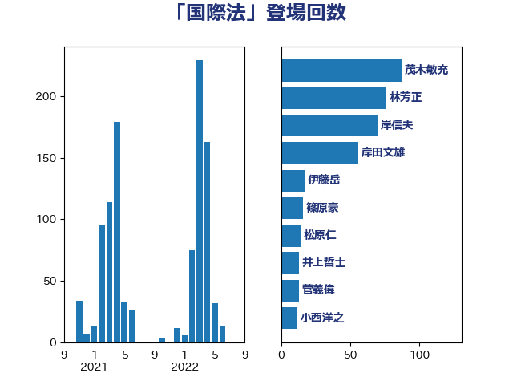

単語「国際法」

| 茂木敏充 | 自由民主党 | 87 回 |
| 林芳正 | 自由民主党 | 76 回 |
| 岸信夫 | 自由民主党 | 70 回 |
| 岸田文雄 | 自由民主党 | 56 回 |
| 伊藤岳 | 日本共産党 | 17 回 |
| 篠原豪 | 立憲民主党 | 16 回 |
| 松原仁 | 立憲民主党 | 14 回 |
| 井上哲士 | 日本共産党 | 13 回 |
| 菅義偉 | 自由民主党 | 13 回 |
| 小西洋之 | 立憲民主党 | 12 回 |
| 伊波洋一 | 無所属 | 10 回 |
| 太栄志 | 立憲民主党 | 10 回 |
| 浅田均 | 日本維新の会 | 10 回 |
| 山添拓 | 日本共産党 | 9 回 |
| 猪口邦子 | 自由民主党 | 9 回 |
| 前原誠司 | 国民民主党 | 8 回 |
| 古賀之士 | 立憲民主党 | 8 回 |
| 芳賀道也 | 国民民主党 | 7 回 |
| 赤嶺政賢 | 日本共産党 | 7 回 |
| 高良鉄美 | 無所属 | 7 回 |
| 加藤勝信 | 自由民主党 | 6 回 |
| 吉田宣弘 | 公明党 | 6 回 |
| 小田原潔 | 自由民主党 | 6 回 |
| 山口壯 | 自由民主党 | 6 回 |
| 田村智子 | 日本共産党 | 6 回 |
| 穀田恵二 | 日本共産党 | 6 回 |
| 谷田川元 | 立憲民主党 | 6 回 |
| 赤羽一嘉 | 公明党 | 6 回 |
| 三浦信祐 | 公明党 | 5 回 |
| 勝部賢志 | 立憲民主党 | 5 回 |
| 古賀友一郎 | 自由民主党 | 5 回 |
| 城内実 | 自由民主党 | 5 回 |
| 田島麻衣子 | 立憲民主党 | 5 回 |
| 足立康史 | 日本維新の会 | 5 回 |
| 鈴木宗男 | 日本維新の会 | 5 回 |
| 鷲尾英一郎 | 自由民主党 | 5 回 |
| 上田清司 | 国民民主党 | 4 回 |
| 下村博文 | 自由民主党 | 4 回 |
| 大塚耕平 | 国民民主党 | 4 回 |
| 松野博一 | 自由民主党 | 4 回 |
| 渡辺周 | 立憲民主党 | 4 回 |
| 重徳和彦 | 立憲民主党 | 4 回 |
| 金田勝年 | 自由民主党 | 4 回 |
| 音喜多駿 | 日本維新の会 | 4 回 |
| あべ俊子 | 自由民主党 | 3 回 |
| 吉田統彦 | 立憲民主党 | 3 回 |
| 嘉田由紀子 | 無所属 | 3 回 |
| 堀井巌 | 自由民主党 | 3 回 |
| 塩川鉄也 | 日本共産党 | 3 回 |
| 徳永久志 | 立憲民主党 | 3 回 |
| 新垣邦男 | 立憲民主党 | 3 回 |
| 末松義規 | 立憲民主党 | 3 回 |
| 杉本和巳 | 日本維新の会 | 3 回 |
| 柴田巧 | 日本維新の会 | 3 回 |
| 浜地雅一 | 公明党 | 3 回 |
| 玄葉光一郎 | 立憲民主党 | 3 回 |
| 笠井亮 | 日本共産党 | 3 回 |
| 足立敏之 | 自由民主党 | 3 回 |
| 鈴木俊一 | 自由民主党 | 3 回 |
| 鈴木敦 | 国民民主党 | 3 回 |
| 高木かおり | 日本維新の会 | 3 回 |
| 高橋光男 | 公明党 | 3 回 |
| 上川陽子 | 自由民主党 | 2 回 |
| 中西祐介 | 自由民主党 | 2 回 |
| 井上英孝 | 日本維新の会 | 2 回 |
| 佐藤正久 | 自由民主党 | 2 回 |
| 北神圭朗 | 無所属 | 2 回 |
| 古川禎久 | 自由民主党 | 2 回 |
| 安江伸夫 | 公明党 | 2 回 |
| 宮本徹 | 日本共産党 | 2 回 |
| 小林鷹之 | 自由民主党 | 2 回 |
| 小熊慎司 | 立憲民主党 | 2 回 |
| 小野田紀美 | 自由民主党 | 2 回 |
| 有村治子 | 自由民主党 | 2 回 |
| 榛葉賀津也 | 国民民主党 | 2 回 |
| 浦野靖人 | 日本維新の会 | 2 回 |
| 片山さつき | 自由民主党 | 2 回 |
| 石井章 | 日本維新の会 | 2 回 |
| 石破茂 | 自由民主党 | 2 回 |
| 米山隆一 | 立憲民主党 | 2 回 |
| 赤池誠章 | 自由民主党 | 2 回 |
| 赤澤亮正 | 自由民主党 | 2 回 |
| 鈴木貴子 | 自由民主党 | 2 回 |
| 鬼木誠 | 立憲民主党 | 2 回 |
| こやり隆史 | 自由民主党 | 1 回 |
| 三宅伸吾 | 自由民主党 | 1 回 |
| 伊藤孝恵 | 国民民主党 | 1 回 |
| 北側一雄 | 公明党 | 1 回 |
| 和田有一朗 | 日本維新の会 | 1 回 |
| 國場幸之助 | 自由民主党 | 1 回 |
| 坂井学 | 自由民主党 | 1 回 |
| 塩田博昭 | 公明党 | 1 回 |
| 大家敏志 | 自由民主党 | 1 回 |
| 大野敬太郎 | 自由民主党 | 1 回 |
| 奥野総一郎 | 立憲民主党 | 1 回 |
| 小池晃 | 日本共産党 | 1 回 |
| 小沢雅仁 | 立憲民主党 | 1 回 |
| 小野寺五典 | 自由民主党 | 1 回 |
| 山口俊一 | 自由民主党 | 1 回 |
| 山口那津男 | 公明党 | 1 回 |
| 岡田克也 | 立憲民主党 | 1 回 |
| 岩屋毅 | 自由民主党 | 1 回 |
| 岩渕友 | 日本共産党 | 1 回 |
| 岩谷良平 | 日本維新の会 | 1 回 |
| 川田龍平 | 立憲民主党 | 1 回 |
| 斎藤洋明 | 自由民主党 | 1 回 |
| 新藤義孝 | 自由民主党 | 1 回 |
| 早稲田ゆき | 立憲民主党 | 1 回 |
| 本庄知史 | 立憲民主党 | 1 回 |
| 本村伸子 | 日本共産党 | 1 回 |
| 杉田水脈 | 自由民主党 | 1 回 |
| 松川るい | 自由民主党 | 1 回 |
| 江田憲司 | 立憲民主党 | 1 回 |
| 河野太郎 | 自由民主党 | 1 回 |
| 清水真人 | 自由民主党 | 1 回 |
| 熊谷裕人 | 立憲民主党 | 1 回 |
| 片山大介 | 日本維新の会 | 1 回 |
| 玉木雄一郎 | 国民民主党 | 1 回 |
| 田村貴昭 | 日本共産党 | 1 回 |
| 矢倉克夫 | 公明党 | 1 回 |
| 石川博崇 | 公明党 | 1 回 |
| 石橋通宏 | 立憲民主党 | 1 回 |
| 礒崎哲史 | 国民民主党 | 1 回 |
| 福岡資麿 | 自由民主党 | 1 回 |
| 福島みずほ | 社会民主党 | 1 回 |
| 福重隆浩 | 公明党 | 1 回 |
| 稲富修二 | 立憲民主党 | 1 回 |
| 稲津久 | 公明党 | 1 回 |
| 竹内譲 | 公明党 | 1 回 |
| 簗和生 | 自由民主党 | 1 回 |
| 緒方林太郎 | 無所属 | 1 回 |
| 美延映夫 | 日本維新の会 | 1 回 |
| 羽田次郎 | 立憲民主党 | 1 回 |
| 若宮健嗣 | 自由民主党 | 1 回 |
| 蓮舫 | 立憲民主党 | 1 回 |
| 藤川政人 | 自由民主党 | 1 回 |
| 西銘恒三郎 | 自由民主党 | 1 回 |
| 道下大樹 | 立憲民主党 | 1 回 |
| 酒井庸行 | 自由民主党 | 1 回 |
| 鈴木庸介 | 立憲民主党 | 1 回 |
| 鈴木義弘 | 国民民主党 | 1 回 |
| 鎌田さゆり | 立憲民主党 | 1 回 |
| 長妻昭 | 立憲民主党 | 1 回 |
| 鳩山二郎 | 自由民主党 | 1 回 |
| 麻生太郎 | 自由民主党 | 1 回 |
| 黄川田仁志 | 自由民主党 | 1 回 |